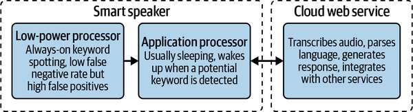

Goal Design and construct a voice assistant that listens for a wake word; records a sentence asking for weather at a city, airport, or location; returns the weather at that spot.
Edge AI applications aren’t always implemented directly on the devices that host the actual sensors. Sometimes, it makes sense to use a multi-device architecture.
A single device might contain multiple types of processors: for example, one for running application code and another for running ML algorithms. A complete system might be composed of many devices, some with multiple processors, that collect and process data at many different points depending on which BLERP benefits are needed. This type of solution can even involve cloud computation.
A great example of this type of architecture is a smart speaker with a voice assistant. Typically, they have at least two processors. The first is a low-power, always-on chip that runs DSP and a machine learning model to listen for wake words without using too much energy.
The second is an application processor, which is woken up by the always-on chip when the wake word is detected. The application processor might run a more sophisticated model to try to catch any false positives that got past the always-on chip. Together, these two processors can identify wake words without violating user privacy by streaming private conversations to the cloud.
Once the wake word has been confirmed, the application processor streams the audio to a cloud server, which performs speech recognition and natural language processing in order to come up with an appropriate response. The general flow is shown in Figure 3-9.

Fig. 31.1 The low-power processor aims to catch as many potential keywords as possible; the application processor wakes up to evaluate any possible matches and invokes the cloud web service if a match is confirmed#
When designing a system, don’t be afraid to consider using multiple devices to tackle some of the trade-offs involved with different device types. Some common situations where it can be helpful are:
Monitoring large numbers of individual entities: this can get expensive if high-end AI-capable hardware is used on every entity.
Reducing energy use: sensors are battery powered and need to last a long time.
Protecting privacy: sending data directly to a large device or cloud server might violate privacy norms.
Integrating with legacy equipment: existing sensors or gateways might be supplemented with edge AI devices rather than being replaced.
We are not worried about revalidating the wake word, but we are interested in processing different pieces of the system on different hardware.
For the duration of the final project, the DFEC AI server will be running Ollama on GPU:1, serving gemma3:27b.
Your instructor will provide the public URL and the private IP address.
You must be connected to the ECE LAN to hit this private IP address.
You may also use the public URL, but must have an IPv6 address and it is blocked on USAFA’s network…
GPU:0will be open and available for you to run your own containers on, but too many students attempting to use it at once may cause problems.
Discuss the problem in terms of Prediction Machines “Anatomy of a Task”.
Draw a detailed block diagram of your system. This should include a user, all hardware components, interfaces, containers/ environments, and the primary process.